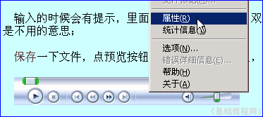

论坛新手操作基础
十、插入音乐 返回目录
如果是音乐帖，可以在帖子中插入一首音乐，注意音乐必须已经发布到网络上，下面我们来看一个练习；
1、进入论坛首页
1）输入网址，例如在地址栏输入http://bbs.laxjyj.com/后回车即可登录论坛首页；

2）此时在左上角显示“您尚未 登录 注册”，点击“登录”链接进入注册页面；

3）在登录页面，输入用户名、密码，选择cookie，然后点击“提交”，过一会儿就登录成功，在页面左边出现自己的用户名；

2、插入音乐
1）在网上找到一首音乐，在播放器上敲右键，在出来的菜单里选择“属性”命令；

2）在出来的属性面板中，复制下边的音乐地址，一般是以mp3、wma结尾的；
3）进入论坛版区，点“新主题”进到发帖框，在右边找到一个音乐图标，点击这个图标；
4）在出来的面板中，在链接地址哪儿，点右键选“粘贴”命令，把刚才复制的地址输入进去，
媒体类型选择“mp3”音乐，播放器大小那儿，改为350和50，勾选“自动播放”，然后点“提交”按钮；
5）这时候发帖框里出来一串代码，这就是插入的音乐，点“提交”按钮，就可以欣赏音乐了；
6）发表视频的方法跟音乐相同，只是在地址和播放器大小那儿换一下；
本节学习了发表音乐帖和视频的基本方法，如果你成功地完成了练习，请继续学习下一课内容；
本教程由86团学校TeliuTe制作|著作权所有
基础教程网：http://teliute.org/
美丽的校园……
转载和引用本站内容，请保留版权信息和本站链接。